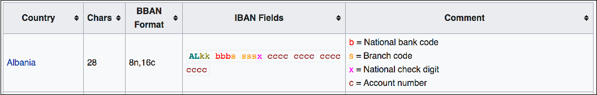

Functions
The following table lists all available functions. For details about each function, see the related function type:
| Function Type | Functions |
|---|---|
| Record functions |
|
| Delimited data record functions |
|
| Error record functions |
|
| Base64 functions |
|
| Category functions |
|
| Credential functions |
|
| Data drift functions |
|
| Data generation functions | Address related faker functions:
Finance related faker functions:
Internet related faker functions:
Person related faker functions:
Xeger functions:
|
| Field functions |
|
| File functions |
|
| Job functions |
|
| Math functions |
|
| Pipeline functions |
|
| String functions |
|
| Time functions |
|
| Miscellaneous functions |
|
Record Functions
Use record functions to determine information about a record, such as the stage that created it or whether a field exists in the record.
You can replace any argument with a literal or an expression that evaluates to the argument. String literals must be enclosed in single or double quotation marks.
 Some functions may not be valid in Data Collector Edge pipelines.
Some functions may not be valid in Data Collector Edge pipelines.
The expression language provides the following general record functions:
- record:attribute(<attribute name>)
- Returns the value of the specified record attribute. Use to return data, for example, for the "tag" attribute that you set using the File Tail origin.
- record:attributeOrDefault(<attribute name> , <default value>)
- Returns the value of the specified record header attribute. When the attribute does not exist or has no value, returns the specified default value.
- record:creator()
- Returns the instance name of the stage that created the record, typically an origin stage. Data is stored in the stageCreator field of a record.
- record:eventCreation()
- Returns the epoch timestamp when an event occurred. Use to return the creation timestamp from an event record. Returns null values when applied to other records.
- record:eventType()
- Returns the event type from an event record. Returns null values when applied to other records.
- record:eventVersion()
- Returns the event version from an event record. Returns null values when applied to other records.
- record:exists(<field path>)
- Determines if the specified field is in a record. When the field is not in the record, returns 0. When the field is in the record, returns 1.
- record:fieldAttribute(<field path>, <field attribute name>)
- Returns the value for the specified field attribute.
- record:fieldAttributeOrDefault(<field path>, <field attribute name>, <default value>)
- Returns the value for the field attribute when it exists. If the attribute does not exist, returns the specified default value.
- record:id()
- Returns the record ID. The record ID is also stored in the sourceId record header attribute.
- record:path()
- Returns the stages in the pipeline that processed a record. Data is stored in the stagesPath
field of a record. The field path uses the following
format:
<origin instance name>:<next stage instance name>:<next stage instance name>:... - record:type(<field path>)
- Checks the data type of a field. Possible return values are:
- Boolean
- Char
- Byte
- Short
- Integer
- Long
- Float
- Double
- Date
- Datetime
- Decimal
- String
- Time
- Byte-Array
- Map
- List
- record:value(<field path>)
- Returns the value of the field in the appropriate data type.
- record:valueOrDefault(<field path> , <default value>)
- Returns the value of the field in the appropriate data type. If the field does not exist or if the field is null, returns the default value.
Delimited Data Record Functions
Use delimited data record functions to process delimited data with the list root field type. If you configured an origin to process the delimited data with the list-map root field type, you can use standard record functions.
 Not valid in Data Collector Edge pipelines.
Do not use delimited data record functions in Data Collector Edge
pipelines.
Not valid in Data Collector Edge pipelines.
Do not use delimited data record functions in Data Collector Edge
pipelines.
For more information about the delimited data root field types, see Delimited Data Root Field Type.
You can replace any argument with a literal or an expression that evaluates to the argument. String literals must be enclosed in single or double quotation marks.
- record:dExists(<header name>)
- Determines if the specified header name exists in the record.
- record:dHasDupHeader()
- Determines if the record has duplicate header names.
- record:dIndex(<header name>)
- Returns the index associated with the specified header name. Use to find the position of a header in the record.
- record:dIsDupHeader(<header name>)
- Determines if the specified header name is used more than once in a record.
- record:dToMap()
- Converts a record with a List root field to a List-Map root field. Use to convert delimited List records to List-Map to allow easier use with standard record functions. For more information about root field types, see Delimited Data Root Field Type.
- record:dValue(<header name>)
- Returns the value associated with the specified header name.
- record:dValueAt(<header index>)
- Returns the value at the specified header index position.
Error Record Functions
Error record functions provide information about error records. Use error functions to process error records.
For example, you might use error functions in a Stream Selector to pass data to different error handling pipelines based on the type of error that occurred.
 Not valid in Data Collector Edge pipelines.
Do not use error record functions in Data Collector Edge
pipelines.
Not valid in Data Collector Edge pipelines.
Do not use error record functions in Data Collector Edge
pipelines.
The expression language provides the following error functions:
- record:errorCode()
- Returns the error code for the error record.
- record:errorCollectorId()
- Returns the ID of the Data Collector that sent the record to error.
- record:errorMessage()
- Returns the error message for the error record.
- record:errorPipeline()
- The name of pipeline that sent the record to error.
- record:errorStackTrace()
- Returns the error stack trace for the error record.
- record:errorStage()
- Returns the instance name of the stage that sent the record to error.
- record:errorStageLabel()
- Returns the user-defined label for the stage that sent the record to error.
- record:errorTime()
- The time the record was sent to error.
Base64 Functions
Use Base64 functions to encode or decode data using Base64.
You can replace any argument with a literal or an expression that evaluates to the argument. String literals must be enclosed in single or double quotation marks.
 Not valid in Data Collector Edge pipelines. Do not use Base64 functions in Data Collector Edge pipelines.
Not valid in Data Collector Edge pipelines. Do not use Base64 functions in Data Collector Edge pipelines.
The expression language provides the following Base64 functions:
- base64:decodeBytes(<string>)
- Returns a decoded byte array from a Base64 encoded string.
- base64:decodeString(<string>, <charset>)
- Returns a decoded string from a Base64 encoded string using the specified character set.
- base64:encodeBytes(<byte array>, <urlSafe: true | false>)
- Returns a Base64 encoded string value of the specified byte array.
- base64:encodeString(<string>, <urlSafe: true | false>, <charset>)
-
Returns a Base64 encoded string value of the specified string.
Credential Functions
Use credential functions to retrieve sensitive information stored as secrets from supported credential stores.
 Not valid in Data Collector Edge pipelines. Do not use credential functions in Data Collector Edge pipelines.
Not valid in Data Collector Edge pipelines. Do not use credential functions in Data Collector Edge pipelines.
Before you use a credential function, you must configure the credential store.
You can use credential functions in stages that require sensitive information, such as user names or passwords, to securely access data in external systems. Credential functions allow pipelines to access external systems without exposing sensitive details.
You cannot use credential functions in all stages. For example, we intentionally do not allow the use of credential functions in the Expression Evaluator processor. If credential functions were allowed in stages such as the Expression Evaluator, any user with access to the pipeline could access or print sensitive values, compromising the security of the external system.
String literals must be enclosed in single or double quotation marks.
The expression language provides the following credential functions:
- credential:get(<cstoreId>, <userGroup>, <name>)
- Returns the secret from the credential store. Uses the following arguments:
- cstoreId - Unique ID of the credential store to use. Use the ID specified in the $SDC_CONF/credential-stores.properties file. For more information, see Enabling Credential Stores.
- userGroup - Group that a user must belong to in order to
access the secret. Only users that have execute permission on the pipeline and that
belong to this group can validate, preview, or run the pipeline that retrieves the
secret.
If working with Control Hub, specify the group using the required naming convention:
<group ID>@<organization ID>.To grant access to all users, specify the defaultallgroup when working only with Data Collector. When working with Control Hub and Data Collector version 3.16.0 or later, you can specify the default group usingallorall@<organization ID>. StreamSets recommends usingallso that you do not need to modify credential functions when migrating pipelines from Data Collector to Control Hub.Note: When working with Control Hub and a Data Collector version earlier than 3.16.0, you must use the defaultall@<organization ID>group. - name - Name of the secret to retrieve from the credential store. Use the
required format for the credential store:
- AWS Secrets Manager - Enter the secret name using the following
format:
"<name><separator><key>"Where
<name>is the name of the secret to read,<separator>is the separator defined in the $SDC_CONF/credential-stores.properties file, and<key>is the key for the value that you want returned. - CyberArk - Enter the secret name using the following format:
"<safe><separator><folder><separator><object name>[<separator><element name>]"Where
<safe>is the CyberArk safe to read,<separator>is the separator defined in the $SDC_CONF/credential-stores.properties file,<folder>is the CyberArk folder to read,<object name>is the CyberArk object or secret to read, and<element name>is an optional name for the value that you want returned.If you do not specify
<element name>, Data Collector usesContent. - Hashicorp Vault - Enter the secret name using the following
format:
"<path><separator><key>"Where
<path>is the path in Vault to read,<separator>is the separator defined in the $SDC_CONF/credential-stores.properties file, and<key>is the key for the value that you want returned. - Java keystore - Enter the name of the secret added to the Java
keystore file using the
jks-cs addcommand. - Azure Key Vault - Enter the name of the key or secret to retrieve from Azure Key Vault.
- AWS Secrets Manager - Enter the secret name using the following
format:
- credential:getWithOptions(<cstoreId>, <userGroup>, <name>, <storeOptions>)
- Returns the secret from the credential store using additional options to communicate with the credential store. Not applicable for the Java keystore credential store.
Category Functions
Category functions are included with the Protector stage library. You can use category functions only in the Protector: Expression processor and the Protector: Masks processor.
Category functions return parts of certain categories of data, such as the area code of a phone number, or the domain of an email address. Category functions enable you to protect sensitive data while retaining parts of the original data for processing.
Area code ${US_PHONE:areaCode()}- This replaces phone numbers withArea code <area code>.${US_PHONE:areaCode()}-xxx-xxxx- This returns the area code of the phone number with the rest of the number removed, as follows:<area code>-xxx-xxxx.To achieve this same result, you could alternatively use the following mask with the Protector: Masks processor:
123-xxx-xxxx.
When needed, you can use category functions to standardize the data for available categories.
Credit Card Numbers
- CREDIT_CARD:type()
- Returns the type of credit card that the number represents:
AMERICAN_EXPRESS,MASTERCARD, orVISA. - CREDIT_CARD:firstGroup()
- Returns the first numeric group of the credit card number.
- CREDIT_CARD:secondGroup()
- Returns the second numeric group of the credit card number.
- CREDIT_CARD:thirdGroup()
- Returns the third numeric group of the credit card number.
- CREDIT_CARD:fourthGroup()
- Returns the fourth numeric group of the credit card number. When a credit card number does not include a fourth numeric group - such as American Express numbers, which only have three groups - this function returns an empty string.
- CREDIT_CARD:lastPart()
- Returns the last group of the credit card number. For Mastercard and Visa numbers, returns the last four digits. For American Express numbers, returns the last five digits.
- CREDIT_CARD:std()
- Returns credit card numbers in their standard digit groups, separated by hyphens.
Email Addresses
The Protector stage library includes the following category functions for email addresses. You can use these functions only in stages included in the Protector stage library.
- EMAIL:domain()
- Returns the domain of email addresses. The domain is everything after the @ symbol.
- EMAIL:domainTLD()
- Returns the top level domain (TLD) of the email address. The TLD is the last part of the domain, such as com, gov, or org.
- EMAIL:domainWithoutTLD()
- Returns the domain without the TLD part of the email address.
- EMAIL:localPart()
- Returns the local part of email addresses. The local part is everything before the @ symbol.
- EMAIL:std()
- Returns the email address in the following standard
format:
<local part>@<domain>
Phone Numbers
- US_PHONE:areaCode()
- Returns the area code of United States phone numbers. The area code is the first three digits of a ten digit phone number.
- US_PHONE:areaCodeOrDefault(<default value>)
- Returns the area code of United States phone numbers. When the data does not include a recognizable area code, the function returns the specified default value.
- US_PHONE:exchangeCode()
- Returns the central office code, or exchange code, of United States phone numbers. The exchange code is the second three digits of a ten digit phone number.
- US_PHONE:lineNumber()
- Returns the line number, or subscriber number, of United States phone numbers. The line number is the last four digits of a ten digit phone number.
- US_PHONE:extension()
- Returns the extension associated with United States phone numbers. This
function expects the extension to be a set of numbers after the phone
number, preceded by an
x. This function recognizes extensions when the phone number uses one of the following formats:<phone number>x<extension> <phone number> x<extension> - US_PHONE:extensionOrDefault(<default value>)
- Returns the extension associated with United States phone numbers. When the
data does not include a recognizable extension, the function returns the
specified default value. This function recognizes extensions when the phone
number uses one of the following
formats:
<phone number>x<extension> <phone number> x<extension> - US_PHONE:std()
- Returns United States phone numbers using the following standard format:
such as:+1 (<area code>) <exchange>-<line number> [x<extension>]+1 (xxx)xxx-xxxx.
Social Security Numbers
- US_SSN:areaNumber()
- Returns the area number of United States social security numbers. The area number is the first three digits of a social security number.
- US_SSN:groupNumber()
- Returns the group number of United States social security numbers. The group number is the fourth and fifth numbers of the social security number.
- US_SSN:serialNumber()
- Returns the serial number of United States social security numbers. The serial number is the last four digits of the social security number.
- US_SSN:std()
- Returns social security numbers in the following standard
format:
<area number>-<group number>-<serial number>
Zip Codes
The Protector stage library includes the following category functions for zip codes. You can use these functions only in stages included in the Protector stage library.
- US_ZIP_CODE:stateGroup()
- Returns the state group of United States zip codes. The state group is the first digit of the zip code.
- US_ZIP_CODE:region()
- Returns the region, or sectional center facility (SCF), numbers of United States zip codes. The region group is the second and third digits of a zip code.
- US_ZIP_CODE:cityArea()
- Returns the city or town area numbers of United States zip codes. The city or town area is the fourth and fifth digits of a zip code.
- US_ZIP_CODE:specificLocation()
- Returns the specific geographic location, which is the last four digits of a 9 digit United States zip code. The specific geographic location is also known as the +4 part of a zip code.
- US_ZIP_CODE:specificLocationOrDefault(<default>)
- Returns the specific geographic location, which is the last four digits of a 9 digit United States zip code. The specific geographic location is also known as the +4 part of a zip code. When a zip code does not include the specific geographic location, this function returns the user-defined default value.
- US_ZIP_CODE:std()
- Returns zip codes in one of the following standard
formats:
<five digit zip> <five digit zip>-<specific location>
Data Drift Functions
Use data drift functions to create alerts when data drift occurs. You can use these functions in data drift rules.
You can replace any argument with a literal or an expression that evaluates to the argument. String literals must be enclosed in single or double quotation marks.
 Not valid in Data Collector Edge pipelines. Do not use data drift functions in Data Collector Edge pipelines.
Not valid in Data Collector Edge pipelines. Do not use data drift functions in Data Collector Edge pipelines.
- drift:names(<field path>, <ignoreWhenMissing: true | false>)
- Triggers an alert when key values change in a map or list-map field. When key values are field names, triggers an alert when field names change. Use with list-map or map fields.
- drift:order(<field path>, <ignoreWhenMissing: true | false>)
- Triggers an alert when the field order changes for fields within a list-map field. Use only with list-map fields.
- drift:size(<field path>, <ignoreWhenMissing: true | false>)
- Triggers an alert when the number of fields changes within a list, list-map, or map field. Use with list, list-map, or map fields.
- drift:type(<field path>, <ignoreWhenMissing: true | false>)
- Triggers an alert when the data type of the specified field changes. Evaluates only the specified field.
Data Generation Functions
Data generation functions are included in the Protector stage library. You can use data generation functions only in the Protector: Expression processor.
- Faker functions - Generate specific types of fake data, such as addresses, names, and credit card numbers.
- Xeger functions - Generate fake data based on user-defined regular expressions.
- Random
- Values are generated randomly, regardless of input value. Each value that is replaced is replaced with a new, random value.
- Deterministic
- Generated values are reused when the same input values appear. This allows you to determine in downstream processing that values recur, while ensuring that the data is protected.
Faker Functions
The Protector stage library includes the following faker functions to generate fake data. You can use these functions only in stages included in the Protector stage library.
Faker functions have two types of output, random and deterministic.
The following faker functions are listed by category.
Address-Related Data
- deterministicFaker:country(<input>)
- Generates a fake country name. Reuses the same generated country name
for the same input value. Uses the following argument:
- input - Value to determine when to reuse generated country names.
- randomFaker:country()
- Generates a fake country name. Uses a random country name for every input value.
- deterministicFaker:UsCity(<input>)
- Generates a fake city in the United States. Reuses the same city name
for the same input value. Uses the following argument:
- input - Value to determine when to reuse generated city names.
- randomFaker:UsCity()
- Generates a fake city in the United States. Uses a random city name for every input value.
- deterministicFaker:UsFullAddress(<input>)
- Generates a fake full address in the United States. Reuses the same
address for the same input value. Uses the following argument:
- input - Value to determine when to reuse generated addresses.
- randomFaker:UsFullAddress()
- Generates a fake full address in the United States. Uses a random address for every input value.
- deterministicFaker:UsState(<input>)
- Generates a fake United States state name. Reuses the same name for the
same input value. Uses the following argument:
- input - Value to determine when to reuse generated state names.
- randomFaker:UsState()
- Generates a fake United States state name. Uses a random state name for every input value.
- deterministicFaker:UsStreetAddress(<input>)
- Generates a fake street address in the United States. Reuses the same
address for the same input value. Uses the following argument:
- input - Value to determine when to reuse generated addresses.
- randomFaker:UsStreetAddress()
- Generates a fake street address in the United States. Uses a random street address for every input value.
- deterministicFaker:UsZipCode(<input>)
- Generates a fake United States 9-digit zip code. Reuses the same zip
code for the same input value. Uses the following argument:
- input - Value to determine when to reuse generated zip codes.
- randomFaker:UsZipCode()
- Generates a fake United States 9-digit zip code. Uses a random zip code for every input value.
Finance-Related Data
- deterministicFaker:creditCard(<input>)
- Generates a fake credit card number. Reuses the same generated number
for the same input value. Uses the following argument:
- input - Value to determine when to reuse generated numbers.
- randomFaker:creditCard()
- Generates a fake credit card number. Uses a random number for every input value.
- deterministicFaker:creditCardOfType(<type>, <input>)
- Generates a fake credit card number of the specified type. Reuses the
same generated number for the same input value. Uses the following
arguments:
- type - Credit card type to generate. Use one of the following
values:
AMERICAN_EXPRESS,MASTERCARD, orVISA. - input - Value to determine when to reuse generated numbers. Uses a random number for every input value.
- type - Credit card type to generate. Use one of the following
values:
- randomFaker:creditCardOfType(<type>)
- Generates a fake credit card number of the specified type. Uses a random
number for every input value. Uses the following argument:
- type - Credit card type to generate. Use of the following
values:
AMERICAN_EXPRESS,MASTERCARD, orVISA.
- type - Credit card type to generate. Use of the following
values:
- deterministicFaker:iban(<input>)
- Generates a fake international bank account number (IBAN). Reuses the
same generated number for the same input value. Uses the following
argument:
- input - Value to determine when to reuse generated numbers.
- randomFaker:iban()
- Generates a fake IBAN. Uses a random number for every input value.
- deterministicFaker:ibanForCountry(<country code>, <input>)
- Generates a fake IBAN for the specified country. Reuses the same
generated number for the same input value. Uses the following
arguments:
- country code - An ISO-3166-1 alpha-2 country
code to indicate the IBAN country format to generate.
Note that only a subset of all countries have their own IBAN
format. For a list, see this Wikipedia
page.Tip: For the country code, you can also use the first two characters listed in the IBAN Fields column in the second link. For example, the country code for Albania is
AL, as shown below:
- input - Value to determine when to reuse generated codes.
- country code - An ISO-3166-1 alpha-2 country
code to indicate the IBAN country format to generate.
Note that only a subset of all countries have their own IBAN
format. For a list, see this Wikipedia
page.
- randomFaker:ibanForCountry(<country code>)
- Generates a fake IBAN for the specified country. Uses a random IBAN for
every input value. Uses the following argument:
- country code - An ISO-3166-1 alpha-2 country
code to indicate the IBAN country format to generate.
Note that only a subset of all countries have their own IBAN
format. For a list, see this Wikipedia page.Tip: For the country code, you can also use the first two characters listed in the IBAN Fields column in the second link. For example, the country code for Albania is
AL, as shown below:
- country code - An ISO-3166-1 alpha-2 country
code to indicate the IBAN country format to generate.
Note that only a subset of all countries have their own IBAN
format. For a list, see this Wikipedia page.
Internet-Related Data
- deterministicFaker:email(<input>)
- Generates a fake email address. Reuses the same generated address for
the same input value. Uses the following argument:
- input - Value to determine when to reuse generated addresses.
- randomFaker:email()
- Generates a fake email address. Uses a random email address for every input value.
- deterministicFaker:url(<input>)
- Generates a fake URL. Reuses the same generated URL for the same input
value. Uses the following argument:
- input - Value to determine when to reuse generated URLs.
- randomFaker:url()
- Generates a fake URL. Uses a random URL for every input value.
Person-Related Data
For person-related data, you can use the following faker functions:
- deterministicFaker:race(<input>)
- Generates a fake race. Reuses the same generated race for the same input
value. Uses the following argument:
- input - Value to determine when to reuse generated values.
- randomFaker:race()
- Generates a fake race. Uses a random race for every input value.
- deterministicFaker:UsFirstName(<input>)
- Generates a fake United States first name. Reuses the same generated
name for the same input value. Uses the following argument:
- input - Value to determine when to reuse generated names.
- randomFaker:UsFirstName()
- Generates a fake United States first name. Uses a random name for every input value.
- deterministicFaker:UsLastName(<input>)
- Generates a fake United States last name. Reuses the same generated name
for the same input value. Uses the following argument:
- input - Value to determine when to reuse generated names.
- randomFaker:UsLastName()
- Generates a fake United States last name. Uses a random name for every input value.
- deterministicFaker:UsPhone(<input>)
- Generates a fake United States phone number. Reuses the same number for
the same input value. Uses the following argument:
- input - Value to determine when to reuse generated numbers.
- randomFaker:UsPhone()
- Generates a fake United States phone number. Uses a random number for every input value.
- deterministicFaker:UsSsn(<input>)
- Generates a fake United States social security number. Reuses the same
number for the same input value. Uses the following argument:
- input - Value to determine when to reuse generated numbers.
- randomFaker:UsSsn()
- Generates a fake United States social security number. Uses a random number for every input value.
Xeger Functions
Xeger functions generate fake data based on user-defined regular expressions. You can use xeger functions only in stages included in the Protector stage library.
Before using a xeger function, check if a faker function generates the type of data that you are looking for.
email field. Then, it appends the fake user name
to the real domain associated with the input email
address:${xeger:deterministic(‘[a-z]{5,10}’, record:value('/email')}@${EMAIL:domain()}This generates user names as follows: <fake username>@<real domain>.
You can use the following xeger functions:
- xeger:deterministic(<regular expression>, <input>)
- Generates fake data based on the structure of the data defined by the
regular expression. Reuses the same fake data when the input value is the
same. Uses the following arguments:
- regular expression - A regular expression that defines the structure of the fake data to generate.
- input - Value to determine when to reuse generated values.
- xeger:random(<regular expression>)
- Generates fake data based on the structure of the data defined by the
regular expression. Generates new fake data for every input value. Uses the
following argument:
- regular expression - A regular expression that defines the structure of the fake data to generate.
Field Functions
You can use field functions in field path expressions that determine the set of fields that a processor uses. Each function is evaluated against a set of matching fields individually.
 Not valid in Data Collector Edge pipelines. Do not use field functions in Data Collector Edge pipelines.
Not valid in Data Collector Edge pipelines. Do not use field functions in Data Collector Edge pipelines.
- f:attribute()
- f:name()
- f:type()
- f:path()
- f:value()
For more information about field path expressions, see Field Path Expressions. For a list of stages where you can use field functions, see Supported Stages.
- f:attribute(<attribute name>)
- Returns the value of the specified field attribute.
- f:getSiblingWithName(<field name>)
- Returns the sibling field - a field with the same parent field - that has
the name matching
<field name>, if the field exists. - f:hasSiblingWithName(<field name>)
- Returns
trueif there is a sibling field with a name matching<field name>, otherwise returnsfalse. - f:hasSiblingWithValue(<field name>, <field value>)
- Returns
trueif there is a sibling field with a name matching<field name>that has value matching<field value>, otherwise returnsfalse. - f:index()
- Returns the index within the parent list field. Returns -1 if the field is not in a list.
- f:name()
- Returns the field name.
- f:parent()
- Returns the parent field.
- f:parentPath()
- Returns the path of the parent field.
- f:path()
- Returns the path of a field. Use to return the fields with a specified path or where the path is as defined in the expression.
- f:type()
- Returns the data type of a field. Use to return the fields with a specified type or where the field type is as defined in the expression.
- f:value()
- Returns the value of the field. Use to return the fields with a specified value or where the value is as defined in the expression.
File Functions
Use file functions to return information about a file name or path. For example, you might use a file function to remove a file extension from a file path or to return part of the path.
You can replace any argument with a literal or an expression that evaluates to the argument. String literals must be enclosed in single or double quotation marks.
 Not valid in Data Collector Edge pipelines. Do not use file functions in Data Collector Edge pipelines.
Not valid in Data Collector Edge pipelines. Do not use file functions in Data Collector Edge pipelines.
- file:fileExtension(<filepath>)
- Returns the file extension from a file path. Uses the following argument:
- filepath - An absolute path to a file.
- file:fileName(<filepath>)
- Returns the file name from a file path. Uses the following argument:
- filepath - An absolute path to a file.
- file:parentPath(<filepath>)
- When used with a path to a file, returns the path to the file without the
final separator, such as
/filesfor/files/file.log. - file:pathElement(<filepath>, <integer>)
- Returns the part of a path based on the specified integer. Uses the
following arguments:
- filepath - An absolute path to a file.
- integer - The section of a path to return. Can return parts starting
from the left or right side of the path:
- To return a section of a path, counting from the left side of the path, use 0 and positive integers and start with 0.
- To return a section of a path, counting from the right side of the path, use negative integers and start with -1.
- file:removeExtension(<filepath>)
- Returns the file path without the file extension. Uses the following
argument:
- filepath - An absolute path to a file.
Job Functions
Use job functions to return information about a Control Hub job. For example, you might use a job function to return the name of the job running a pipeline.
You can replace any argument with a literal or an expression that evaluates to the argument. String literals must be enclosed in single or double quotation marks.
- job:id()
- Returns the ID of the job if the pipeline was run from a Control Hub job. Otherwise, returns "UNDEFINED".
- job:name()
- Returns the name of the job if the pipeline was run from a Control Hub job. Otherwise, returns "UNDEFINED".
- job:startTime()
- Returns the start time of the job if the pipeline was run from a Control Hub job. Otherwise, returns the start time of the pipeline.
- job:user()
- Returns the user who started the job if the pipeline was run from a Control Hub job. Otherwise, returns "UNDEFINED".
Math Functions
Use math functions to perform math on numeric values.
You can replace any argument with a literal or an expression that evaluates to the argument. String literals must be enclosed in single or double quotation marks.
- Double
- Float
- Integer
- Long
- StringNote: Data Collector parses a string as a Double value if the numeric value in a String field contains a dot ( . ). Otherwise, Data Collector parses the string as a Long value.
 Some functions may not be valid in Data Collector Edge pipelines.
Some functions may not be valid in Data Collector Edge pipelines.
- math:abs(<number>)
- Returns the absolute value, or positive version, of the argument. If the argument is already positive, returns the original number.
- math:ceil(<number>)
- Returns the smallest integer greater than or equal to the argument.
- math:floor (<number>)
- Returns the largest integer greater than or equal to the argument.
- math:max(<number1>, <number2>)
- Returns the greater of two arguments.
- math:min(<number1>, <number2>)
- Returns the lesser of two arguments.
- math:round(<number>)
- Returns the closest number to the argument, rounding up for ties.
Pipeline Functions
Use pipeline functions to determine information about a pipeline, such as the pipeline title or ID. The expression language provides the following pipeline functions:
- pipeline:id()
- Returns the ID of the pipeline. The ID is a UUID automatically generated when the pipeline is created and is used by Data Collector to identify the pipeline. The pipeline ID cannot be changed.
- pipeline:name()
- Like
pipeline:id, this function returns the ID of the pipeline. The ID is a UUID automatically generated when the pipeline is created and is used by Data Collector to identify the pipeline. The pipeline ID cannot be changed. - pipeline:startTime()
- Returns the start time of the pipeline.
Return type: Datetime.
- pipeline:title()
- Returns the title or name of the pipeline.
- pipeline:user()
- Returns the user who started the pipeline.
- pipeline:version()
- Returns the pipeline version when the pipeline has been published to StreamSets Control Hub. Returns "UNDEFINED" if the pipeline has not been published to Control Hub. Use this function when you have registered Data Collector to work with Control Hub.
String Functions
Use string functions to transform string data.
You can replace any argument with a literal or an expression that evaluates to the argument. String literals must be enclosed in single or double quotation marks.
 Some functions may not be valid in Data Collector Edge pipelines.
Some functions may not be valid in Data Collector Edge pipelines.
The expression language provides the following string functions:
- str:concat(<string1>, <string2>)
- Concatenates two strings together.
- str:contains(<string>, <subset>)
- Returns true or false based on whether the string contains the configured subset of characters.
- str:endsWith(<string>, <subset>)
- Returns true or false based on whether the string ends with the configured subset of characters.
- str:escapeXML10(<string>)
- Returns a string that you can embed in an XML 1.0 or 1.1 document.
- str:escapeXML11(<string>)
- Returns a string that you can embed in an XML 1.1 document.
- str:indexOf(<string>, <subset>)
- Returns the index within a string of the first occurrence of the specified subset of characters.
- str:isNullOrEmpty(<string>)
- Returns true or false based on whether a string is null or is the empty string.
- str:lastIndexOf(<string>, <subset>)
- Returns the index within a string of the last occurrence of the specified subset of characters.
- str:length(<string>)
- Returns the length of a string.
- str:matches(<string>, <regEx>)
- Returns true or false based on whether a string matches a Java regex pattern.
- str:regExCapture(<string>, <regEx>, <group>)
- Parses a complex string into groups based on a Java regex pattern and returns the specified group.
- str:replace(<string>, <oldChar>, <newChar>)
- Replaces all instances of a specified character in a string with a new character.
- str:replaceAll(<string>, <regEx>, <newString>)
- Replaces a set of characters in a string with a new set of characters.
- str:split(<string>, <separator>)
- Splits a string into a list of strings based on the specified separator.Uses the following arguments:
- string - An input string.
- separator - The set of characters that designate a string split.
For example, suppose a record contains adimensionsstring field that records a height, width, and length: "height=32 width=24 length=36". The function${str:split(record:value("/dimensions"), " ")}returns the following list of strings:"height-32", "width=24", "length=36" - str:splitKV(<string>, <pairSeparator>, <keyValueSeparator>)
- Splits key-value pairs in a string into a map of string values.
- str:startsWith(<string>, <subset>)
- Returns true or false based on whether the string starts with the configured subset of characters.
- str:substring(<string>, <beginIndex>, <endIndex>)
- Returns a subset of the string value that starts with the beginIndex character and ends one character before the endIndex.
- str:toLower(<string>)
- Converts string data to all lowercase letters.
- str:toUpper(<string>)
- Converts string data to all capital letters.
- str:trim(<string>)
- Trims leading and trailing white space characters from a string, including spaces and return characters.
- str:truncate(<string>, <length>)
- Returns a string truncated to the specified length. Use an integer to specify the length.
- str:unescapeJava(<string>)
- Returns an unescaped string from a string with special Java characters. Use to include binary or non-printable characters in any location where you can enter an expression.
- str:unescapeXML(<string>)
- Returns an unescaped string from a string that had XML data escaped.
- str:urlDecode(<URL>, <charset>)
- Converts characters from a URL to the specified character set, such as UTF-8.
- str:urlEncode(<infoforURL>, <charset>)
- Converts invalid characters to help create a valid URL based on the specified character set, such as UTF-8. You might use this function when using record data to add additional information, like a fragment, to a URL.
Time Functions
Use time functions to return the current time or to transform datetime data.
You can replace any datetime argument with an expression that evaluates to a datetime value. You cannot replace a datetime argument with a datetime literal.
You can replace any long or string argument with a literal or an expression that evaluates to the argument. String literals must be enclosed in single or double quotation marks.
 Not valid in Data Collector Edge pipelines. Do not use time functions in Data Collector Edge pipelines.
Not valid in Data Collector Edge pipelines. Do not use time functions in Data Collector Edge pipelines.
The expression language provides the following time functions:
- time:createDateFromStringTZ(<string>, <time zone>, <date format>)
- Creates a Date object based on a datetime in a String field and using the specified time zone. The datetime string should not include the time zone.
- time:dateTimeToMilliseconds(<Date object>)
-
Converts a Date object to an epoch or UNIX time in milliseconds.
For example, the following expression converts the current time to epoch or UNIX time in seconds, and then multiplies the value by 1000 to convert the value to milliseconds:${time:dateTimeToMilliseconds(time:now())}Return type: Long.
- time:dateTimeZoneOffset(<Date object>, <time zone>)
-
Returns the time zone offset in milliseconds for the specified date and time zone. The time zone offset is the difference in hours and minutes from Coordinated Universal Time (UTC).
Uses the following arguments:- Date object - Date object to use.
- time zone - Time zone associated with the Date object.You can use the following time zone formats:
- <area>/<location> - For a list of valid time zones in this format, see https://www.vmware.com/support/developer/vc-sdk/visdk400pubs/ReferenceGuide/timezone.html.
- Numeric time zones with the GMT prefix, such as GMT-0500 or GMT-8:00. Note that numeric-only time zones such as -500 are not supported.
- Short time zone IDs such as EST and CST - These time zones should generally be avoided because they can stand for multiple time zones, e.g. CST stands for both Central Standard Time and China Standard Time.
For example, the following expression returns the time zone offset of the Date object stored in the Date field using the time zone specified in the TZ field:${time:dateTimeZoneOffset(record:value('/Date'), record:value('/TZ'))}Return type: Long.
- time:extractDateFromString(<string>, <format string>)
-
Extracts a Date object from a String, based on the specified date format.
Uses the following arguments:- string - String to extract the Date object from.
- format string - String that specifies the date format of the data in the <string> argument. For information about creating a date format, see https://docs.oracle.com/javase/8/docs/api/java/text/SimpleDateFormat.html.
- time:extractLongFromDate(<Date object>, <format string>)
- Extracts a long value from a Date object, based on the specified date format.
- time:extractStringFromDate(<Date object>, <format string>)
- Extracts a string value from a Date object based on the specified date format.
- time:extractStringFromDateTZ(<Date object>, <time zone>, <format string>)
- Extracts a string value from a Date object, converting the GMT time in the Date object to the specified date format and time zone. The function adjusts for daylight savings when given the time zone in the appropriate format.
- time:millisecondsToDateTime(<long>)
- Converts an epoch or UNIX time in milliseconds to a Date object.
- time:now()
- Returns the current time of the Data Collector machine as a java.util.Date object.
- time:timeZoneOffset(<time zone>)
-
Returns the time zone offset in milliseconds for the specified time zone. The time zone offset is the difference in hours and minutes from Coordinated Universal Time (UTC).
Uses the following argument:- time zone - Time zone to use.You can use the following time zone formats:
- <area>/<location> - For a list of valid time zones in this format, see https://www.vmware.com/support/developer/vc-sdk/visdk400pubs/ReferenceGuide/timezone.html.
- Numeric time zones with the GMT prefix, such as GMT-0500 or GMT-8:00. Note that numeric-only time zones such as -500 are not supported.
- Short time zone IDs such as EST and CST - These time zones should generally be avoided because they can stand for multiple time zones, e.g. CST stands for both Central Standard Time and China Standard Time.
For example, the following expression returns the time zone offset using the time zone specified in the TZ field:${time:timeZoneOffset(record:value('/TZ'))}Return type: Long.
- time zone - Time zone to use.
- time:trimDate(<datetime>)
- Trims the date portion of a datetime value by setting the date portion to January 1, 1970.
- time:trimTime(<datetime>)
- Trims the time portion of a datetime value by setting the time portion to 00:00:00.
Miscellaneous Functions
In miscellaneous functions, you can replace any argument with a literal or an expression that evaluates to the argument. String literals must be enclosed in single or double quotation marks.
 Some functions may not be valid in Data Collector Edge pipelines.
Some functions may not be valid in Data Collector Edge pipelines.
The expression language provides the following miscellaneous functions:
- alert:info()
- Returns information about the trigger for a data drift alert. Use only in alert text for data drift alerts.
- emptyList()
- Creates an empty list.
- emptyMap()
- Creates an empty map.
- every(<interval>, < hh() | mm() | ss() >)
- Represents the interval of hours, minutes, or seconds for generating output directories for the Hadoop FS, Local FS, or MapR FS destination.
- field:field()
- Returns the field name. Available only in the Decimal field expression properties of the Hive Metadata processor.
- isEmptyList()
- Returns true or false based on whether a list is empty.
- isEmptyMap()
- Returns true or false based on whether a map is empty.
- jvm:maxMemoryMB()
- Returns the Java heap size allocated to the Data Collector in MB. You can use this function in an expression to specify the maximum amount of memory a pipeline can use.
- length()
- Returns the length of a list.
- list:join(<list field>, <separator>)
- Merges elements in a List field into a String field, using the specified separator between elements.
- list:joinSkipNulls(<list field>, <separator>)
- Merges elements in a List field into a String field, using the specified separator between elements and skipping null values.
- offset:column(<position>)
- Returns the value of the positioned offset column for the current table. Available only in the additional offset column conditions of the JDBC Multitable Consumer origin.
- runtime:availableProcessors()
-
Returns the number of processors available to the Java virtual machine. You can use this function when you want to configure multithreaded processing based on the number of processors available to Data Collector.
Return type: Integer.
- runtime:conf(<runtime property>)
- Returns the value for the specified runtime configuration. Use to call a runtime property.
- runtime:loadResource(<file name>, <restricted: true | false>)
- Returns the value in the specified file, trimming any leading or trailing whitespace characters from the file. Use to call a runtime resource.
- runtime:loadResourceRaw(<file name>, <restricted: true | false>)
- Returns the entire contents in the specified file, including any leading or trailing whitespace characters in the file. Use to call a runtime resource.
- sdc:hostname()
- Returns the host name of the Data Collector or Data Collector Edge machine.
- sdc:id()
- Returns the Data Collector ID.
For a pipeline that runs in standalone execution mode, the ID is a unique identifier associated with the Data Collector, such as 58efbb7c-faf4-4d8e-a056-f38667e325d0. The ID is stored in the following file: $SDC_DATA/sdc.id.
For a pipeline that runs in cluster mode, the ID is the Data Collector worker partition ID generated by a cluster application, such as Spark or MapReduce.
- size()
- Returns the size of a map.
- uuid:uuid()
- Returns a randomly generated UUID. For example, you might use the function in an Expression Evaluator processor to generate a UUID for an ID field added to each record.
- vault:read(<path>, <key>)
- Returns the value for the key on the specified path. You can use the function in username, password, and similar properties such as
AWS access key IDs and secret access keys. You can also use the function in
HTTP headers and bodies when using HTTPS.Important: This function is now deprecated and will be removed in a future release. We recommend using the credential functions available with the Vault credential store integration in pipelines that include JDBC stages.
- vault:readWithDelay(<path>, <key>, <delay>)
- Returns the value for the key on the specified path after waiting the specified amount
of time. Use when you want a delayed response to allow time for external processing. Important: This function is now deprecated and will be removed in a future release. We recommend using the credential functions available with the Vault credential store integration in pipelines that include JDBC stages.
You can use the function in username, password, and similar properties such as AWS access key IDs and secret access keys. You can also use the function in HTTP headers and bodies when using HTTPS.